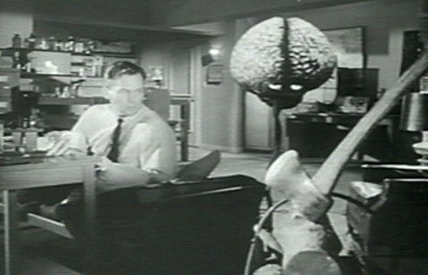
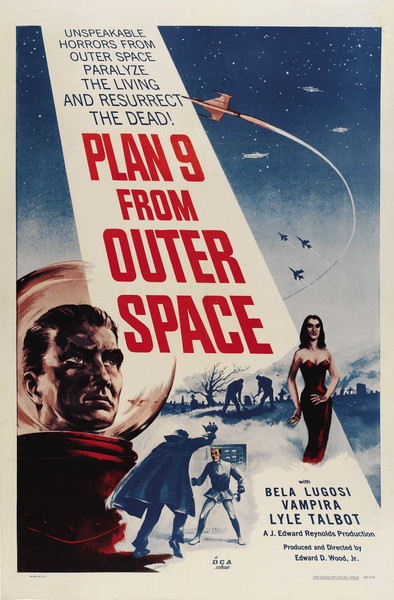
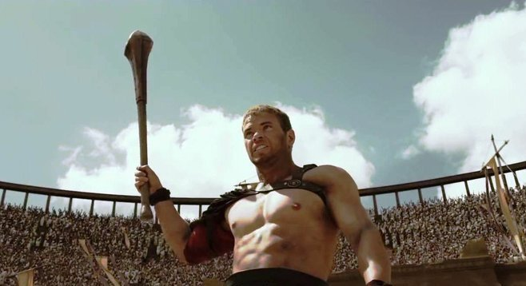

What Exactly is a B-Movie?
Although there are many differing opinions as to what a b-movie actually is, there is only one real technical definition to the term. The actual technical definition is that a b-movie was the second movie on a double bill. It was typically a low budget formula type film, which fell somewhere in the suspense, horror, sci-fi, western, exploitation or gangster genres, although there were other genres covered as well.
This definition later gave way to the wider definition of b-movie, which basically encompassed any low budget film. Now I personally have a problem with this definition, because as a classic film reviewer, I've reviewed a wide variety of classic b-movies that taken as a whole, have a feel that truly sets them apart as an all encompassing genre unto themselves.
So what exactly is a b-movie? Well if you've ever seen one of those cheesy sci-fi movies from the 50's, or seen a goofy old monster movie where the monster looks like something out of a Sid and Marty Krofft Saturday morning kid's show, then you've seen a b-movie. B-movies have a feeling and a style all their own. They're low budget, formulaic, and often feature some of the cheesiest acting and dialogue you'll ever see on film.
Despite the opinion of the Hollywood types who think the only way to make a movie good is to throw money at it, b-movies broke the rules and proved that you could make fun and enjoyable pictures without a ton of money and flashy CGI effects. It was this philosophy that made b-movies the special films they are. B-movie directors took microbudgets and made some of the greatest films in history. Were they great because they had great acting, great special effects or great storylines? No. They're great because they touched a part of us that allowed our child-like innocence to take over, and these are the movies that have stuck with us throughout the years. We don't always know what they were called, and we don't always remember what they were about, but the images from these classic b-movies are images that have stayed with many of us throughout our adult lives.
I can't tell you how many times I've gotten e-mails from people describing some cheap sci-fi movie they saw as a kid and asking if I could tell them what it was. People don't forget those images, even though many of the details may be lost. Fortunately, because of the advent of DVD, we're able to track down many of these great old films, not only so we can enjoy them again, but so that they can be shared with the next generation of kids who really need this kind of innocent fun in a world that beats them over the head with adult themes and problems every day of their lives. By sharing these great old movies with today's children, we can ensure that not only will these films not be forgotten, but that a huge part of American culture won't be forgotten either.
So what are some of the great b-movies? Well I'm sure most people have heard of Plan 9 From Outer Space. The director, Ed Wood, has been called the most inept director of all time, which is a sad title that he didn't deserve and I think his record should be cleared. The simple fact that so many people know of his work and have experienced it means that he created a lasting part of American film history. How could you possibly condemn a man who achieved such greatness and notoriety even though he unfortunately only achieved it posthumously?
Many people are only really familiar with Plan 9, but the fact is that Ed Wood created nearly five hundred television commercials early in his career, and then went on to make westerns, gangster flicks, sci-fi and paranormal type movies, and even a documentary style film called Glen or Glenda? in which he portrayed the lead character himself. There are some really great Ed Wood films available on DVD, many of which are far better and more fun than Plan 9. Night of the Ghouls, Glen or Glenda? and Bride of the Monster are all wonderfully fun and creative films that shouldn't be missed by any b-movie fan, or by anyone who really wants to understand the genre.
There is a flip side of the coin however. Not every b-movie is great, and not every director has the talent and style of Ed Wood. Take for instance a man who has become the bane of my existence, Larry Buchanan. He made films like It's Alive! and Mars Needs Women, and in doing so, solidified his place as one of the worst filmmakers of all time. His movies are boring and tedious, containing some of the most uninspired acting I've ever seen. They are also generally lacking in entertainment value despite the fact that a competent director could have probably done a good job with the material. It's a sad fact of life though that directors like him are a necessary evil. If there weren't people doing it wrong, then how would you know who was doing it right?
The Italians made their share of b-style films as well. In fact, they were responsible for an entire genre know as peplum, or sword and sandal films. These films usually centered around Hercules or one of the other Greek or Roman heroes, so as the name implies, there were lots of swords and sandals. Two of the greatest films of this genre are Hercules and Hercules Unchained, both starring legendary bodybuilder Steve Reeves. For many, Steve Reeves will always be the quintissential Hercules, even though the character was protrayed by many different actors over the years including Reg Park, Sergio Ciani (credited as Alan Steel), Kirk Morris, Mark Forest, Peter Lupus (credited as Mark Stevens) and Lou Ferrigno.
Peplum films are not the only kind of b-style movies the Italians specialized in. They also made their share of sci-fi films such as War of the Planets and War of the Robots, and westerns like My name is Trinity and Trinity is Still My Name, both starring the great Italian actor Terrence Hill with his perennial sidekick Bud Spencer as his grumpy bear of a brother, Bambino. Then there were the horror films...
Italian horror is a matter of taste. I personally don't care much for Italian horror, but its contribution to the genre is undeniable. Directors like Lucio Fulci with his bizarre zombie films, Zombi 2 and City of the Living Dead, Dario Argento with movies like Suspiria and Deep Red and Mario Bava with films like Black Sabbath and Black Sunday. Mario Bava actually crossed over into the peplum genre at one point as well, making Hercules in the Haunted World starring bodybuilder, Reg Park.
One other contribution the Italians made to the genre were cannibal films. While disgusting by their very nature, and illegal in this day and age, these films saw a variety of animals slaughtered and eaten on film for the sole purpose of shocking the audience. There was also much actual cannibalism in these films, although that part was nothing more than movie magic. Unfortunately for the animals, their slaughter was all too real. One example of a film in this genre is 1978's Slave of the Cannibal God directed by Sergio Martino. Oddly enough, it stars American actor Stacy Keach and Swiss actress Ursula Andress in the two leading roles...
To read full article by Duane L. Martin CLICK HERE